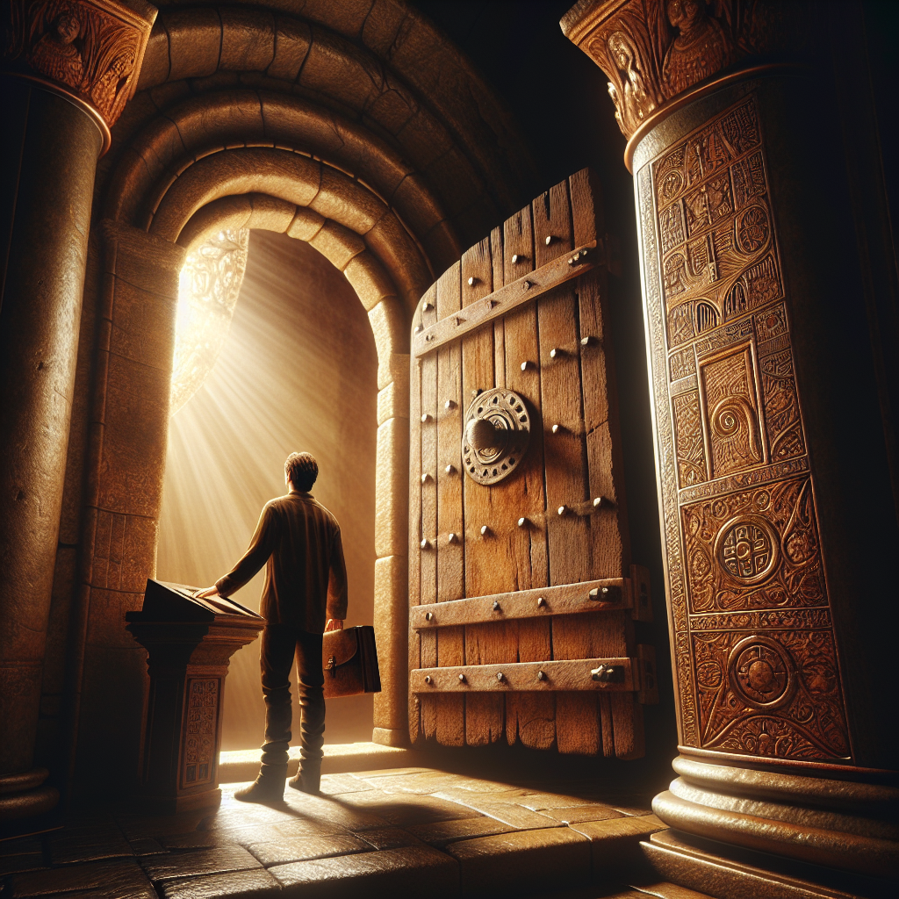

Jonathan was a servant in the distant kingdom from Afar. Even though his life was one of hard labour and hardships under the rule of King Thorn the Third, Jonathan was a visionary man. During the late Summer months after the harvest he regularly would have the vision of an angel which would tell him about the Eight chambers that he needed to open. Every year he would mention one chamber. Every vision would be dedicated to one chamber. The first chamber was the chamber of introspection and silence. Theh second chamber the chamber of the victory over distractions and fear, the third the chamber of flexibility and the wisdom to adapt, the fourth the chamber of tolerance to hardships and suffering, the fifth, the chamber of clear vision and discernment, the sixth, the chamber of judgement and decisiveness and the seventh, the chamber of courage and confrontation in which he needed to put everything he learnt into practice. And finally there was the last chamber, the chamber of compassion and service to mankind.
It so happened that after the last vision about the Eighth Chamber, a tremendous war started in King Thorn's Kingdom. During the siege of Thorn's castle, Jonathan accessed the Thorn's hidden dungeons during the whole chaos and got lost in the dungeon's maze. It is int this maze that Jonathan will find the chambers one by one. The last chamber however will allow Jonathan to escape from all the chaos and oppressive Kingdom of Thorn. The last chamber represents the beginning of a new life for Jonathan in a new World of freedom and peace.
 As Jonathan stood before the ancient door, its wood groaning like the whisper of a bygone era, he felt the weight of silence wrap around him like a cloak. An inscription, etched deep and filled with the dust of ages, bore the words, "The Chamber of Introspection and Silence." With a touch that was both tentative and reverent, Jonathan pushed the door open, and the hinges cried out, as if in protest to the disturbance of their slumber.
The chamber lay bathed in a soft, ethereal glow, the source of which was not immediately apparent. The air was still, and the silence so profound it seemed to hum with the echo of the thoughts it had absorbed over the centuries. Jonathan stepped inside, his heart a thrumming bird in his chest, and as the door swung shut behind him, the outside world fell away, leaving him in a cocoon of solitude.
There, in the midst of the chamber, stood a simple stone pedestal, upon which rested an ancient tome, its pages yellowed with the passage of time. Jonathan approached it, his hands trembling slightly as he reached out to touch the leather-bound cover. The moment his skin made contact, a warmth spread through him, a gentle heat that seeped into his very soul.
The Chamber of Introspection and Silence demanded that he look inward, to confront the essence of his being without the cacophony of the world to distract him. Jonathan closed his eyes and drew a deep breath, letting the silence wash over him like the tide. Memories began to surface, flickering through his mind like fireflies in the night – memories of hardship and toil, of laughter and tears, of dreams that soared on the wings of hope, only to be clipped by the harsh realities of servitude under King Thorn the Third.
In this space, time seemed malleable, stretching and compressing with each passing thought. Jonathan's mind wandered through the labyrinth of his past, each turn and twist revealing hidden facets of his character. He saw the moments of weakness and strength, the times he had given in to despair and the times he had risen above it.
The chamber was not just a place but a mirror, reflecting back at Jonathan the truths he had hidden from himself. He saw now the fears that had bound him, the doubts that had whispered like specters in his mind. But here, in the hallowed quiet, those fears and doubts lost their power. They became mere shadows, dissipating under the gaze of his newfound clarity.
Hours passed, or perhaps it was moments; time was a fickle companion within these walls. Jonathan felt a sense of peace settle upon him, a quietude that filled the crevices of his soul. And in that peace, he found understanding – an introspection that revealed his true self, not the self that had been shaped by his servitude, but the self that was born of his own inner light.
As the silence enveloped him, Jonathan realized that it was not an absence of sound but the presence of a profound listening. He listened to the rhythm of his own heart, the breath that flowed in and out like the tide, the stillness of his spirit. It was in this listening that he found the strength to let go, to release the cacophony of the past and embrace the quietude of the present.
When he finally opened his eyes, the chamber seemed to acknowledge his transformation. The light that had filled the room now shimmered with a gentle radiance, a silent benediction for the journey he had undertaken within himself. Jonathan knew that this was but the first step, the first chamber in a series that would challenge and shape him in ways he could scarcely imagine.
With a solemn nod to the chamber that had borne witness to his introspection, Jonathan turned toward the door. As it opened before him, the sounds of the world rushed back in – distant echoes of chaos and strife from the siege that ravaged King Thorn's castle. But within Jonathan, there was a newfound silence, a sanctuary of calm that he carried within his heart.
He stepped out of the Chamber of Introspection and Silence, closing the door behind him, the echo of its closing a final note in the symphony of silence. Ahead lay the path to the next chamber, and Jonathan, with quiet determination, set forth to continue his journey through the maze that would lead him to freedom and to the destiny that awaited him beyond the oppressive kingdom of Thorn.
In the dimness of the undercroft, beneath the besieged castle of King Thorn, Jonathan stood before the second chamber, its door an archaic structure of weathered oak and iron, baring inscriptions of ancient tongues long forgotten. The carvings seemed to writhe and contort as if alive, a testament to the chamber's purpose—to vanquish the ceaseless clamor of the world and the shadows of fear that dwell within the heart.
With the key of introspection and silence securely in his grasp, a gift from the Chamber of Introspection and Silence, Jonathan reached out, and the lock yielded as if it had been waiting for his touch. The door swung open without a sound, revealing a vast hall that stretched beyond the reach of his sight. The air within was thick with whispers, echoes of a thousand voices, each vying for attention, each a distraction from his quest.
Jonathan stepped into the hall, and the door shut behind him with a resonance that rumbled through the chamber like distant thunder. He was alone, yet not alone, for the whispers grew in intensity, manifesting fears both known and unknown—voices of doubt, ridicule, and despair, of wars long past and those yet to come.
He walked onward, his eyes adjusting to the chamber's subtle light, a glow that seemed to emanate from the very stones themselves. The whispers grew louder, and the air became a cacophony of noise, a tempest of sound that threatened to overwhelm him. It was the noise of the world outside, the chaos of the siege, the cries of the oppressed and the clash of steel upon steel.
But Jonathan had learned from the first chamber the value of introspection, and he closed his eyes, drawing upon the silence he had embraced. Within that silence, he found a stillness, a point of calm amidst the storm. He focused on that calm, letting it expand until it was a shield about him, a barrier against the barrage of distractions.
As he walked, the whispers turned to shouts, the hall seemingly endless, a labyrinth designed to ensnare the mind. Shadows flickered at the edge of his vision—terrors conjured by his own fears. He saw himself as the lowly servant he had been, unworthy and weak. He saw the disappointed faces of those he could not save, the ruin of the kingdom, and the relentless, cruel gaze of King Thorn.
But Jonathan was no longer a servant; he was a seeker of the chambers, chosen by visions of a celestial messenger. He held onto that purpose, letting it be his guiding light. The shadows waned, the faces in his mind's eye softened, offering not disappointment but hope. The whispers could not claim him, for he had conquered the silence within.
The hall finally began to narrow, and the cacophony subsided, the whispers falling away until there was naught but a single voice—a voice that spoke not from the chamber, but from the depths of Jonathan's soul.
"Victory is not the absence of fear," it said, "but the mastery of it."
Jonathan opened his eyes to see the chamber bathed in a serene light, the tumultuous path behind him now clear and calm. Ahead, the chamber ended at a pedestal upon which lay another key, wrought of silver and light, pulsing with an inner strength. This was the key to the Chamber of Flexibility and Wisdom to Adapt.
He approached the pedestal, his hand reaching out with a resolve that had been forged in the silence of his own heart. As his fingers wrapped around the key, the chamber seemed to sigh, a sound of release, of walls that had held firm now falling away.
Jonathan turned back to the door through which he had entered, and as he did, it opened before him, revealing the maze of the dungeon once again. But he was changed. The distractions of the world held no power over him, and the fears that had once whispered in the dark corners of his mind were now but echoes, reminders of the victory he had claimed in this chamber.
With the key of victory over distractions and fear secured, Jonathan moved forward, ready to face the next chamber and the wisdom it held. For in this ancient place of trials, he would find not just the keys to the chambers but the keys to his own liberation.
Through the labyrinthine corridors of King Thorn's forsaken dungeons, Jonathan wandered, his heart alight with the semblance of visions that had graced him in the tranquil aftermath of harvest times. Whispers of the angelic prophecy echoed in his mind, a guiding star in the murk of his uncertain path. Before him, the imposing visage of the third chamber loomed, its oaken door carved with the sinuous forms of willow trees bending in an unseen breeze.
With a gentle push, the door yielded to his touch, and Jonathan stepped across the threshold into a realm unlike any he had seen. The chamber stretched wide and high, a tapestry of twilight skies and shifting landscapes painted across its walls. The air itself seemed to pulse with an ethereal flexibility, resonating with the breath of change that danced through the room.
In the heart of the chamber stood an ancient tree, its roots delving deep into the stone floor, while its branches reached upwards, embracing the very heavens. It was not merely a tree, Jonathan perceived, but a symbol of life's enduring capacity to bend in the face of tempests and to thrive amidst the trials of existence.
A voice, soft yet resonant, spoke from the very air, "Jonathan of Afar, you have come to learn the wisdom of adaptability, to embrace the flow of change as the willow embraces the wind."
Jonathan approached the tree, laying his hands upon the gnarled bark. A warmth spread from the contact, seeping into his veins, and he felt a connection to the ages, to the countless seasons that the tree had witnessed and weathered. "How shall I learn to bend and not break?" he asked the chamber, his voice steady with newfound resolve.
"Observe the willow," the voice replied, "how it yields to the force of the storm, its branches dancing in harmony with the gale. Yet when the fury subsides, it stands tall once more, unbroken and serene."
Jonathan watched as the walls of the chamber came to life, scenes of great upheaval playing out before his eyes. Empires rose and fell, rivers carved new paths through the earth, and mountains crumbled to dust. Through it all, the willow remained, a constant in the flux of time.
"True strength lies not in rigidity but in the grace of yielding," the voice continued. "It is in the wisdom to adapt that one finds the path to endure the ever-changing tides of fate."
As he pondered these words, a sudden tremor shook the chamber. The walls cracked and groaned, a mimicry of the chaos that reigned beyond the dungeon's confines. Jonathan's heart raced, yet within him stirred a newfound calm, a serenity that flowed from the depths of his spirit.
With a deep breath, he spoke the lesson he had learned, "To stand resolute in the face of change, one must be as the willow, supple and resilient, bending but never breaking."
A light shone from the tree, enveloping Jonathan in a warm embrace. In that moment, the chamber seemed to dissolve around him, and he stood beneath the open sky, the willow at his side. The tumult of the dungeon was a distant memory, replaced by the gentle rustling of leaves and the caress of a soft breeze.
The voice spoke for the final time, "You have embraced the wisdom of the third chamber, Jonathan of Afar. Carry this knowledge with you, for it will be a beacon in the darkest of times, a reminder that to survive is to adapt, and to adapt is to live."
As the light faded, Jonathan found himself once again within the confines of the chamber, the door standing ajar, beckoning him onward to the next trial. With a heart emboldened by the wisdom of flexibility, he stepped forward, the echo of the willow's dance whispering promises of resilience for the journey ahead.
For in the Chamber of Flexibility and Wisdom to Adapt, Jonathan had found the courage to bend with circumstance, to yield when necessary, and to emerge from the tempest unbroken and wise.
Upon leaving the Chamber of Flexibility and Wisdom to Adapt, Jonathan felt the weight of his journey growing heavier upon his shoulders. The air in the passages of the dungeon seemed to thicken, as if to impede his progress with a palpable sense of foreboding. His heart, however, remained undaunted; for the angel's visions had prepared him for the trials that lay ahead, and he knew that the path to true freedom was fraught with hardships.
The fourth chamber was not hidden by a door, nor was it shrouded in mystery. It was a vast, open space, lined with stones cold and unyielding. Here, the very walls seemed to whisper tales of suffering and endurance. In the center stood a solitary plinth, and upon it, a chalice filled with a liquid as dark as the night sky without stars. Jonathan approached with cautious steps, his hands trembling not from fear but from the anticipation of the trial he must face.
As he reached for the chalice, the air grew heavy with the echoes of the past; the chamber was alive with the souls of those who had endured before him. Voices of laborers under the harsh rule of King Thorn the Third melded with the cries of those who had suffered in the dungeons, creating a chorus of resilience. Jonathan listened, his heart swelling with a sense of unity with those who had borne so much.
He lifted the chalice and drank deeply, the bitter liquid burning a trail down his throat. It was as if the essence of hardship itself was coursing through his veins, teaching him the true meaning of endurance. As the potion took hold, Jonathan's vision blurred, and he found himself transported to a place of desolation and despair.
He stood on a battlefield, the ground barren and scarred by warfare. Around him, the clash of steel rang out as men fought valiantly against overwhelming odds. Jonathan could feel the exhaustion in their limbs, the pain of their wounds, and the sorrow in their hearts. Yet, amidst it all, there was a steadfast spirit that refused to yield.
Jonathan witnessed a farmer, his hands calloused and his back bent, tilling a field that refused to give forth life. The sun beat down mercilessly, and the earth was as unforgiving as stone. But the farmer persisted, planting seeds with the hope that they would one day blossom into sustenance for his family.
Then, a woman appeared before him, her eyes filled with tears as she cradled a child in her arms. The child was sick, too weak to cry out, and the woman's heart was heavy with the weight of her helplessness. Yet, she sang a lullaby, her voice a gentle balm against the harshness of their reality.
Through these visions, Jonathan understood that true strength was not the absence of suffering but the ability to persevere in spite of it. He felt the pain of the farmer's toil, the mother's sorrow, and the soldier's resolve. It was a lesson engraved upon his soul, a testament to the indomitable will of the human spirit.
As the potion's effects waned, Jonathan found himself back in the chamber, his body wracked with exhaustion but his spirit unbroken. He realized that the chalice was not merely a vessel for a bitter draught but a symbol of life's unrelenting trials. The liquid was a distillation of the suffering faced by countless souls, and in drinking it, Jonathan had shared in their experiences, their endurance etched into his being.
Rising to his feet, his legs unsteady but his resolve firm, Jonathan knew that he had been tempered by the Chamber of Tolerance to Hardships and Suffering. He had learned the value of enduring pain with grace and the strength that comes from embracing life's adversities.
With a newfound determination, Jonathan strode forth from the chamber. The path ahead promised even greater challenges, but he was ready. For he now carried the resilience of the ages within him, and no hardship could ever break the spirit of a man who had drunk from the chalice of endurance.
Jonathan stood before the oaken door of the fifth chamber, its surface a tapestry of carvings depicting eyes in various states - some closed, some half-lidded, and others wide open with pupils clear as crystal. The air was thick with expectation, a silence that seemed to hum with the knowledge of what lay beyond. With a deep breath, he pushed the door open, and the creak of the old hinges was like a whisper of secrets being unveiled.
The chamber was unlike any he had encountered before. It was vast and circular, the walls lined with mirrors of all shapes and sizes. They reflected Jonathan’s image a hundredfold, but with subtle differences that he could not immediately understand. The mirrors seemed to beckon him to look deeper, to see beyond the mere reflection of his physical form.
In the center of the room sat a pedestal, and atop it, a basin filled with a clear, shimmering liquid. It was as though it held the distilled essence of truth itself. Jonathan approached cautiously, his footsteps echoing softly on the stone floor. The angel's words came back to him, "In the Chamber of Clear Vision and Discernment, your sight will pierce the veils of illusion. Trust in what you see, for the eyes can be wise counselors when the heart is clouded by emotion."
He reached the basin and peered into it. The liquid seemed to ripple with a life of its own, and as he gazed into its depths, the reflections in the room faded away, replaced by visions that flickered like candlelight. He saw himself in the fields, working tirelessly under the oppressive sun of King Thorn's realm. But as he watched, the image shifted, and he saw not a servant, but a man with a spirit unbroken by toil, whose sweat was not a symbol of subjugation but of resilience.
The visions swirled and changed, showing him moments of his life where he had faced choices - some that led to growth and others to regret. Jonathan realized that the basin was not merely showing him the past; it was revealing the truth of his decisions, the consequences that rippled out from each one, touching lives beyond his own.
As if compelled by an unseen force, Jonathan looked up from the basin and into one of the many mirrors. It was then that he understood the differences in his reflected images. Each mirror showed him not as he was, but as he could be, depending on the path he chose from this chamber forth. In one, he was clad in armor, a leader of men with eyes alight with conviction. In another, he was older, lines of wisdom etched into his face, a mentor to those who sought guidance.
With each reflection, Jonathan felt a clarity settling over his heart and mind. It was as though the mists that had clouded his judgment had been burned away by the light of understanding. He knew now that to discern the truth, one must be willing to look beyond appearances, to question and to listen with the intent to comprehend fully.
A final vision appeared in the basin: the castle of King Thorn under siege, its walls crumbling, the cries of the oppressed rising up in a cacophonous demand for justice. And there, amidst the chaos, Jonathan saw himself, not lost, but moving with purpose, each step leading him closer to the freedom that beckoned.
The chamber, with its mirrors and the basin of truth, had imparted its wisdom, and Jonathan felt a new strength coursing through him. He knew that the path ahead would be fraught with challenges, but he also knew that his vision was clear, his judgment sound. With a resolve born of newfound discernment, Jonathan turned away from the pedestal, his gaze no longer fragmenting into the many mirrors but fixed on the door that led to the next chamber.
With a heart fortified by truth and eyes that saw the world as it truly was, Jonathan stepped through the threshold and into the shadows beyond, carrying with him the gifts of the Chamber of Clear Vision and Discernment.
In the hallowed halls of the chamber, Jonathan stood with the weight of his journey heavy upon his shoulders. The air was thick with the scent of ancient stone and the silent whispers of time long passed. This was the sixth chamber, the realm where judgement and decisiveness were the guardians of one's fate.
Upon the walls, carvings of scales and gavels adorned the stone, each etching a testament to the solemnity of decisions made and the paths chosen. Jonathan's heart beat with newfound resolve, echoing the rhythm of purpose. He felt the presence of the angel's wisdom, her words from the vision coursing through his veins like fire.
"Jonathan of Afar," the voice of the chamber seemed to call, neither loud nor soft, but with a clarity that pierced through the haze of uncertainty. "Thou hast journeyed far, and now stands before the altar of resolution. Here, thou shalt learn the art of the steadfast heart, to choose with conviction and to abide by thy chosen creed."
Jonathan approached the center of the chamber, where a pedestal stood with two ancient relics placed upon it: an unblemished silver chalice and a simple, yet sturdy, iron hammer. The chalice, he knew, represented the well of possibilities, ever brimming with the waters of 'what could be.' The hammer was the instrument of decision, the tool to forge reality from the molten iron of will.
He understood that in this moment, he must drink from the chalice of potential and wield the hammer of resolve to shatter the chains of indecision. As he took the chalice in his hands, he felt a surge of possibilities flood his mind—visions of different futures, choices branching out like the roots of the Great Trees of Old.
But Jonathan was not to be swayed by the dizzying array of what might be. He had learned much from the chambers he had traversed, and his purpose had never been clearer. With a steady hand, he drank deeply, each swallow a covenant to the path he would carve for himself.
Setting down the chalice, Jonathan then took up the hammer, its weight familiar and comforting in his grasp. He raised it high, and with a gaze unclouded by doubt, he brought it down with unyielding force upon the pedestal. The sound of impact rang out, a clarion call that resonated through the chamber and beyond, into the very depths of the labyrinthine dungeon.
In that act, the chamber itself seemed to acknowledge Jonathan's conviction. The walls glowed with a warm, golden light, and the carvings came to life, animating the stories of those who had stood where he now stood, those who had chosen their fates with courage and lived by them with honor.
A voice, ancient and wise, filled the chamber, "Jonathan, son of Afar, thou hast embraced the mantle of judgement and the essence of decisiveness. Carry forth these gifts, for they shall be thy companions in the trials to come."
And with that, the chamber began to shift, walls turning upon invisible hinges, revealing a passage that beckoned him forward. Jonathan knew that the Chamber of Courage and Confrontation awaited him, and with the lessons of decisiveness etched upon his heart, he strode into the unknown with a sturdy step.
The Chamber of Judgement and Decisiveness, with its trials and revelations, had prepared him well. Jonathan now understood that to stand by one's decisions was to wield power over one's own destiny. No longer would he be a leaf caught in the winds of chance, but rather, he would be the steadfast oak, rooted in the earth of his convictions, standing tall against the gales of uncertainty.
As he left the chamber behind, he did not look back, for his gaze was fixed upon the horizon of his own making. Jonathan of Afar was no longer a servant toiling under the yoke of King Thorn the Third, but a visionary man, stepping boldly into the future he would shape with his own hands.
In the depths of Thorn's labyrinthine dungeons, Jonathan, the servant whose heart had swelled with the wisdom of the six preceding chambers, stood before the cavernous maw of the seventh chamber. The air was thick with the weight of unspoken fears, and the stones themselves seemed to whisper of the great trials that lay within.
He took a moment, as he had learned in the Chamber of Introspection and Silence, to gather his thoughts. The echo of his own steady breaths was a calming counterpoint to the palpable tension that gripped the air. Jonathan knew that the Chamber of Courage and Confrontation would demand of him all the valor he possessed.
With a hand that betrayed no tremor, he pushed open the massive door that bore carvings of battles long past, of heroes who had faced their darkest hours with hearts unyielded. The door groaned a reluctant admission, revealing a vast hall lit by an ethereal glow that seemed to emanate from the very rock.
At the chamber's center stood a colossal statue of a knight, clad in armor that shone with a light that was not of this world. The knight's face was stern, yet noble, as if he was preparing to deliver a decree of utmost import. Before the statue lay a sword, its blade reflecting the strange light in ripples of steel.
As Jonathan approached, the air grew heavy, as if the weight of countless souls bore down upon his shoulders. It was here, in the Chamber of Courage and Confrontation, that he must face the embodiment of his fears. The angel's words came back to him, a mantra for the ordeal to come: "In this chamber, thou must put into practice all thou hast learned."
The statue stirred. From stone to flesh, the transformation was swift and complete. The knight stepped down from the dais, the sound of metal against stone reverberating through the hall. Jonathan stood tall, though his heart thundered against his chest. The knight spoke, his voice a deep well of authority.
"Jonathan, servant of the realm, thou hast journeyed far and learned much. But here, thou must face me, thine own doubt and despair. Canst thou wield the courage to confront and conquer?"
Jonathan felt each word like a blow, yet he did not flinch. He remembered the lessons of the Chamber of Victory over Distractions and Fear. He mustered the strength he had gained in the Chamber of Tolerance to Hardships and Suffering. He drew upon the wisdom and discernment he had honed in previous trials.
With a resolve that surprised even himself, Jonathan stepped forward and claimed the sword. The blade sang as he lifted it, a clear note that cut through the fog of his trepidation. He met the knight's gaze, finding within those stone-turned eyes a challenge that was his own.
They fought, the clashing of steel echoing the battles that raged within Jonathan's soul. Every parry, every strike, was a confrontation with his fears, a testament to the courage he had fostered. The Chamber of Judgement and Decisiveness had prepared him well, for each decision he made in the heat of combat was swift and firm.
The battle raged, neither giving ground, until at last Jonathan found an opening. With a cry that was both a release and an affirmation, he pressed forward, driving the knight back. The statue's expression showed a glint of approval as the servant's blade found its mark.
In that moment, as the knight dissipated into a cloud of shimmering motes, Jonathan realized that he had not simply fought an external foe. He had conquered the fear and uncertainty within himself. The Chamber of Courage and Confrontation had revealed the true mettle of his spirit.
Panting, with the sword's hilt still warm in his hand, Jonathan looked around the now-quiet chamber. The oppressive air had lifted, replaced by a sense of clarity and strength. He knew that the final chamber awaited, but within him burned a newfound conviction.
He placed the sword back upon the dais, a silent tribute to the chamber that had demanded so much and had given him more in return. A knight in his own right, Jonathan walked from the Chamber of Courage and Confrontation with his head held high, ready to face the last of the Eight Chambers, and beyond that, a world awaiting the touch of his compassion and service to mankind.
As the door to the seventh chamber closed behind him, a whisper lingered in the air, a voice that was both the angel's and his own: "Thou art ready, Jonathan, for the final gate. Go forth with courage unshaken, for thy true quest begins at the journey's end."
Reflecting the style of J.R.R. Tolkien, this chapter of "Jonathan And The Eight Chambers" captures the essence of an epic journey through trials and self-discovery, much like the adventures within "The Lord of the Rings."
In the dim light of the final chamber, Jonathan stood with a heart brimming with the lessons of the seven chambers that had come before. Each had carved deep furrows in his soul, shaping him into a vessel fit to carry the wisdom of the ages. And now, as he traversed the threshold of the Eighth Chamber, a gentle warmth embraced him, as if the sun had broken through the gloom of an everlasting eclipse.
The walls of this sanctum were adorned with tapestries that shimmered with a golden thread, each portraying acts of kindness that touched the spirit and awakened the slumbering compassion within. Scenes of hands lifting the fallen, eyes that wept with another's grief, and smiles that cut through the darkest of despairs unfolded before Jonathan like a silent hymn to humanity's greatest virtue.
In this chamber, the angel of his visions appeared not as a mere specter but as a presence as palpable as the stone beneath his feet. She bore a countenance of serene grace, her eyes a well of boundless empathy. "Jonathan," she spoke, her voice a gentle breeze, "thou hast learned well the teachings of the chambers. But this final chamber is not for learning alone—it is for unlearning the self."
Jonathan listened, the echo of his own heartbeat a solemn drum in his ears. "To serve mankind is to serve the very essence of creation. Compassion is the thread that binds the tapestry of life, and thou must be the weaver. Go forth and mend the torn fabric of the world, for in giving, thou shalt receive; in healing, thou shalt be healed."
The angel extended her hand, and in her palm lay a key wrought of light, its form ethereal and shifting. "This key opens not doors of iron or wood, but the shackles that bind the hearts of men. Use it to unlock the chains of indifference, to free those ensnared by suffering and ignorance."
Jonathan took the key, and it dissolved into his being, a warmth that spread through his limbs and kindled a flame in his chest. He understood now. The Eighth Chamber was not a chamber of stone; it was the chamber of his own heart, its walls built from the seven virtues he had gathered: introspection, victory, adaptability, endurance, clarity, decisiveness, and courage.
As he turned to leave, the chamber itself seemed to dissolve, the walls fading into a horizon vast and unending. Before him lay a world torn by war and sorrow, a land that cried out for the touch of compassion. Jonathan stepped forward, not as a servant of the Kingdom of Thorn, but as a servant to all mankind.
With each step, his purpose grew clearer. He would walk among the people, sharing the wisdom of the chambers. He would be the balm to the wounded, the guide to the lost. No longer would he toil under the yoke of King Thorn the Third. His service was to a higher throne, one not of gold and jewels but of love and sacrifice.
As he journeyed, the lessons of the chambers manifested in his deeds. He spoke words of solace to the grieving, gave strength to the weary, and offered his hand to those who had fallen. Jonathan became a beacon of hope in a land shadowed by despair, his actions echoing the angel's teachings.
Years passed, and legends grew of a man who could soothe the weeping sky and calm the raging storm with but a whisper of his voice. They spoke of Jonathan, the Compassionate, whose heart was an open door to the weary souls of the world.
And in the fullness of time, the Kingdom of Thorn transformed. The seeds of compassion Jonathan sowed took root and blossomed, until the once oppressive realm became a haven of peace and fellowship. Where the king had ruled with an iron fist, now wise councils guided by the virtues of the Eight Chambers led the people.
At the end of his long journey, Jonathan found himself atop a hill, gazing down at a world reborn. He had unlocked not only the Eighth Chamber but also the potential of countless hearts. As the sun set, painting the sky with hues of fire and gold, Jonathan knew his work was done. He had opened the final chamber, not only for himself but for all who would follow the path of compassion and service to mankind.
In the twilight of his days, he whispered a prayer of thanks to the angel who had set him on this path. Then, with the serenity of a life well-lived, Jonathan closed his eyes one last time, his spirit joining the tapestry of the universe, forever woven into the legacy of the Eight Chambers.